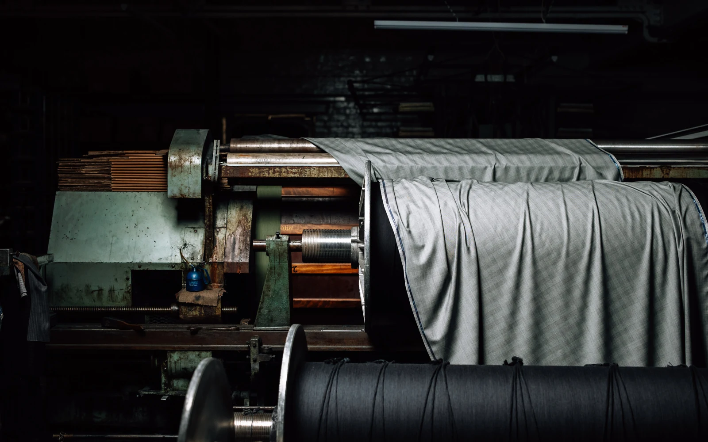
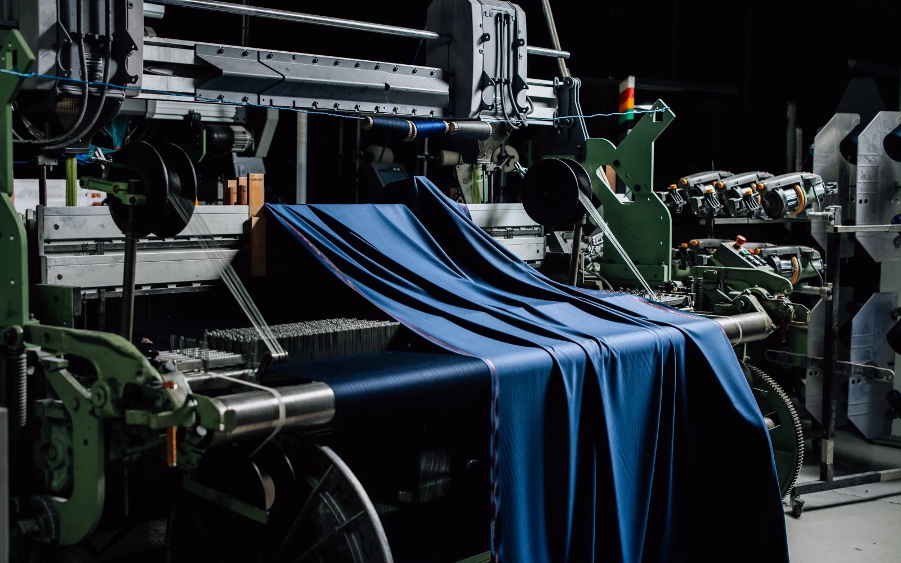
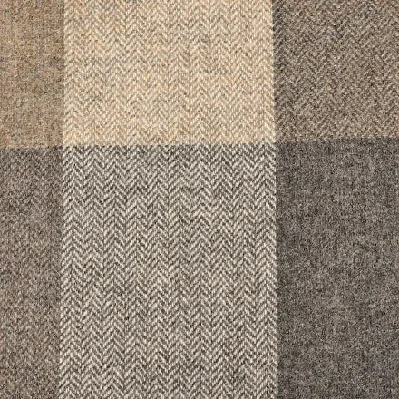
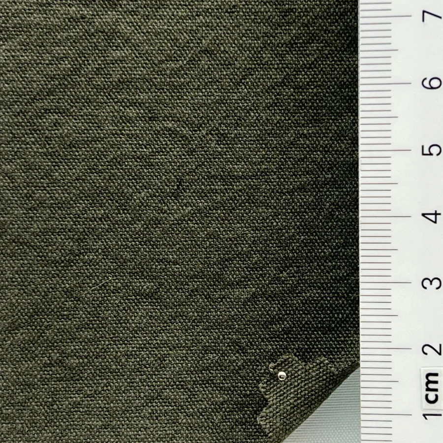
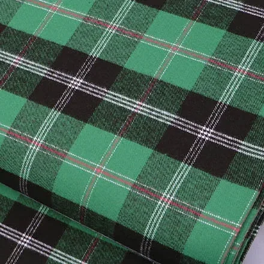
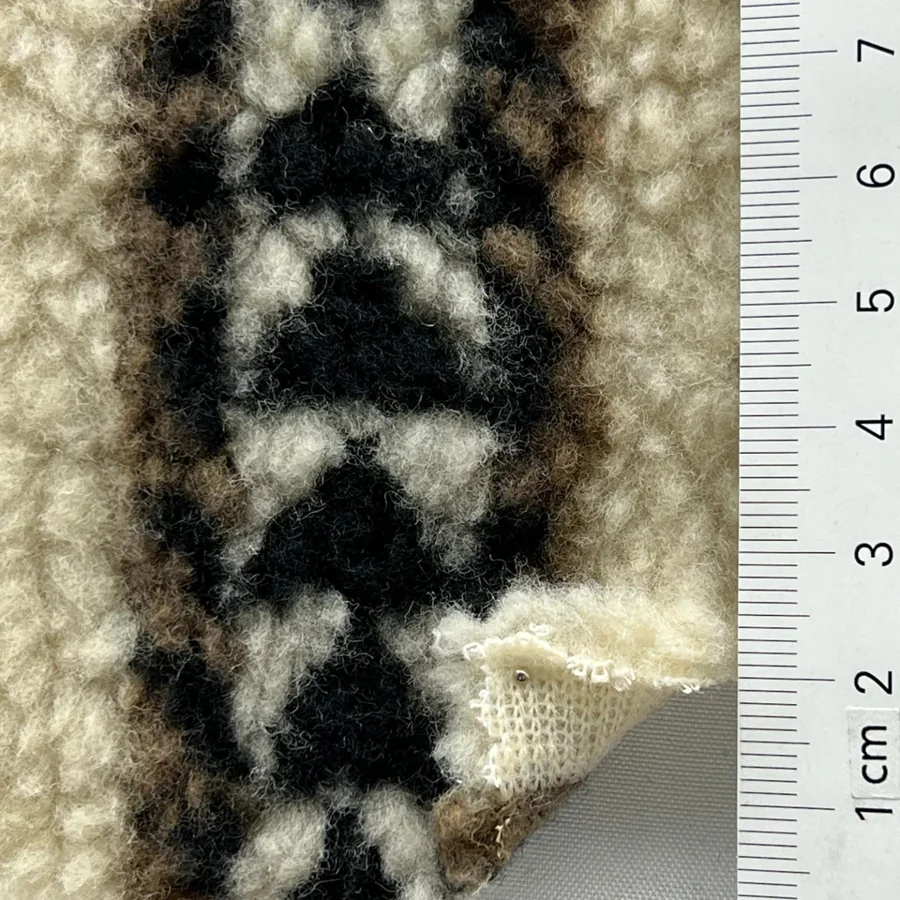
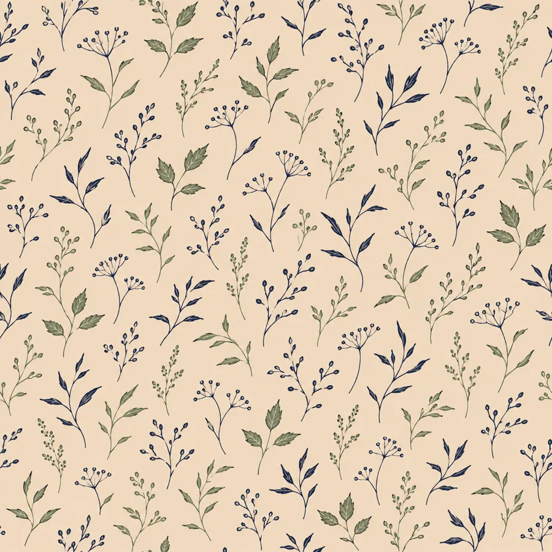
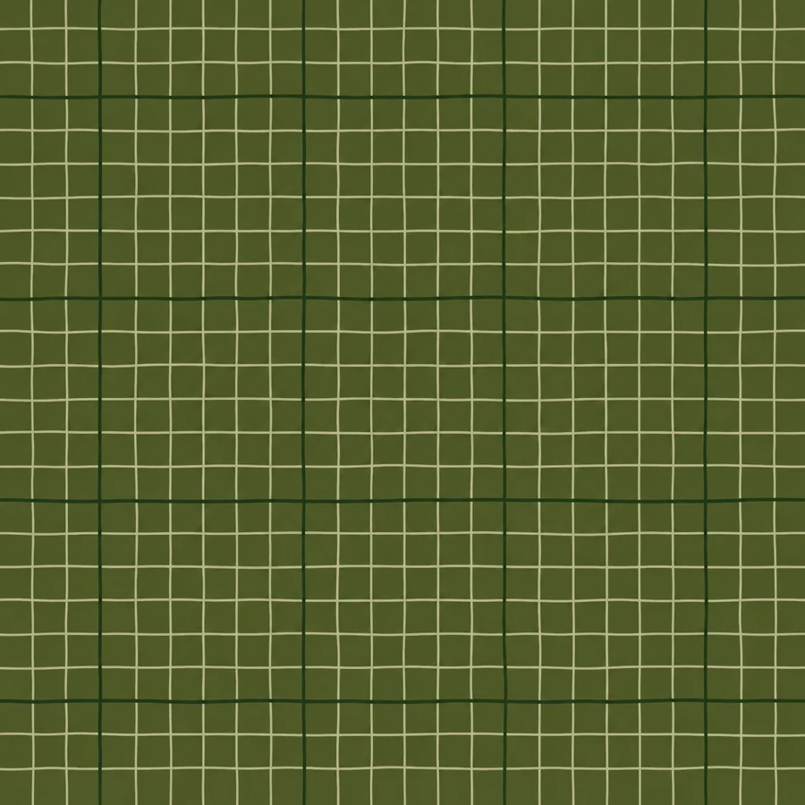
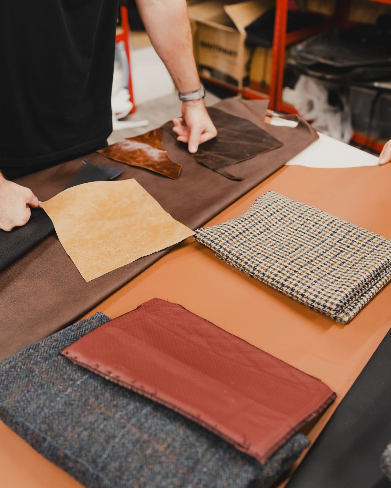

Development Stories / No. 01
From direction
to material.
Texture. Pattern. Possibility.
A closer look at how a clothing idea takes shape in cloth.

01 / Global research
Look wider.
Notice the detail.
Read textile direction through surface, structure and colour. Connect the visual idea with the everyday clothes it could become.
Explore seasonal research

02 / Material selection
Same idea.
Different hand.
A familiar everyday layer can take a different direction through its material. Compare the visible grain, pile and pattern before narrowing the selection.
Open the Fabric Library
Canvas, with character.
A visible grain for an everyday utility layer.
Explore the reference ↗
A check changes the rhythm.
Colour and scale bring a familiar layer into focus.
Explore the reference ↗
Softness at the surface.
A dimensional alternative to a smooth cloth face.
Explore the reference ↗Material references for development. Physical samples establish the actual colour, handle and suitability.
03 / SOHO Design Studio
A palette.
A rhythm.
A new expression.
Explore a quieter botanical or a more deliberate check. Build the design through motif, scale and colour, then resolve it as a repeat and a physical strike-off.
Explore the Design Studio AI-assisted design concepts


04 / Physical review
Bring the idea
back to cloth.
A screen starts the conversation. The material sample brings colour, touch and construction into the same decision.
- 01 / Colour
- Review the shade in the intended material.
- 02 / Surface
- Compare texture, drape and the feel of the cloth.
- 03 / Pattern
- Resolve scale, placement and repeat in a strike-off.